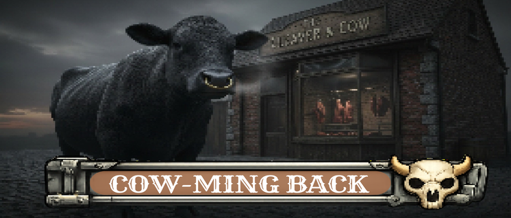
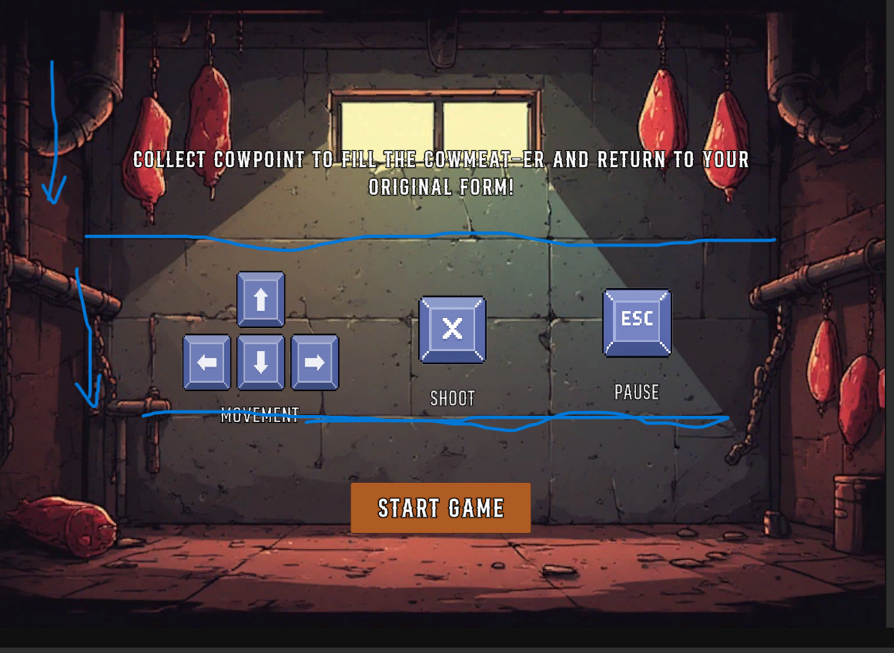

Cowming Back
A liminal horror walking sim where every dream follows its own rules.
A five-day game jam on the theme of “origins”. I took the theme as a journey back to where things began: a cow god grants one chance every year to come back to life, and the one answering the call is a hamburger that wants to return to its original form, a cow. To get there, it has to blast through a side-scrolling shoot ’em up and defeat the ghost cows trying to stop it.
I came up with the concept and handled the game’s visuals and sound. The team was made up only of designers and programmers, with no artists, so I took on the art and audio myself:
- Finding assets, and making them when none fit.
- Turning objects and assets into pixel art with software.
- Creating the backgrounds, including the animated level background (GIF).
- Composing the in-game soundtrack.
- Building the UI elements the game needed.
With no artist on the team, I used software and AI tools, directed by my own references. For the backgrounds I started from reference images and used AI tools to get the specific idea I had in mind. When an image came out blurry, I ran it through a quality upscaler. The UI parts were made the same way, with software and AI tools.
- Delivering a complete look and soundtrack in five days without an artist.
- Getting AI-generated images to match the idea in my head, and fixing blur and quality with an upscaler.
- Keeping backgrounds, pixel-art objects and UI visually consistent.
.

